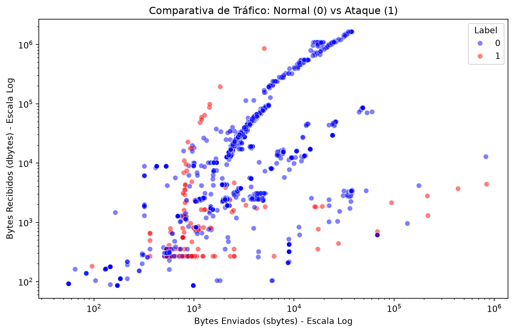
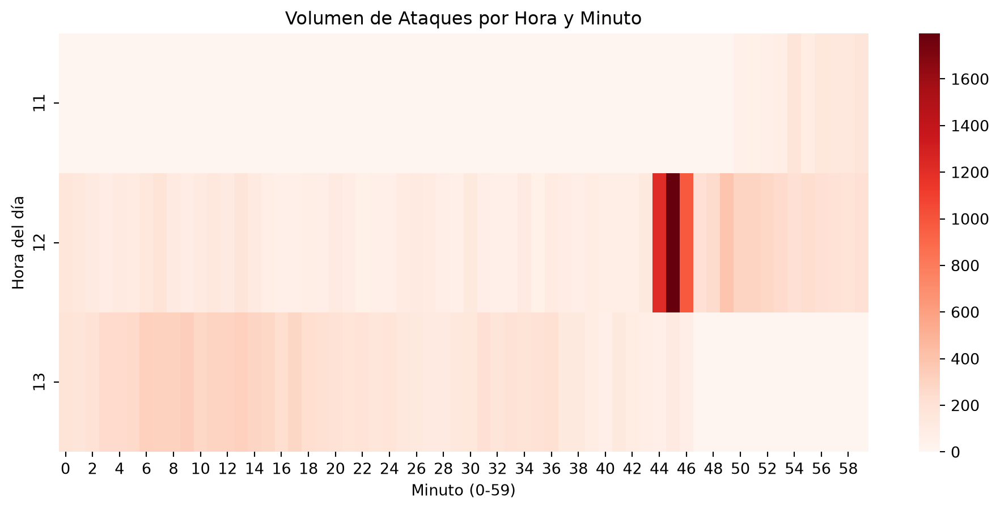

import pandas as pd
import matplotlib.pyplot as plt
import seaborn as sns
import plotly.express as px
# Cargar los datos limpios
df = pd.read_parquet('data/processed/unswnb15_clean.parquet')
# Convertir la columna Stime a formato fecha/hora real
df['datetime'] = pd.to_datetime(df['Stime'], unit='s')Análisis de Tráfico de Red y Ciberseguridad con Pandas
UNSW-NB15 Dataset
1. Descripción del Dataset
En este proyecto se analiza el dataset UNSW-NB15, un entorno de datos de tráfico de red creado por el Australian Centre for Cyber Security (ACCS) para la detección de intrusiones.
Los datos representan flujos de red (netflows) capturados en un entorno real, que incluyen tráfico normal y diversas categorías de ataques (como DoS, Fuzzers, Exploits, etc.).
Para el análisis, se ha utilizado una muestra del primer archivo del dataset original (UNSW-NB15_1.csv), que ha sido procesado y limpiado previamente, resultando en un total de 700.001 registros con las siguientes columnas clave:
srcip/dstip: Direcciones IP de origen y destino.sport/dsport: Puertos de origen y destino.proto/service: Protocolo de red (TCP, UDP, etc.) y servicio (HTTP, DNS, etc.).Stime: Marca de tiempo (Unix timestamp) de inicio de la conexión.sbytes/dbytes: Bytes enviados por el origen y el destino.attack_cat: Categoría del ataque detectado (o ‘Normal’).Label: Etiqueta binaria (0 = Normal, 1 = Ataque).
2. Exploración Inicial (EDA)
A continuación, mostramos un resumen de la estructura de los datos cargados para verificar su integridad.
# Mostrar las dimensiones del DataFrame
print(f"El dataset contiene {df.shape[0]} filas y {df.shape[1]} columnas.\n")
# Mostrar una muestra aleatoria de registros (evita sesgos de orden temporal)
df[['srcip', 'dstip', 'proto', 'service', 'datetime', 'attack_cat', 'Label']].sample(5, random_state=42)El dataset contiene 700001 filas y 50 columnas.
| srcip | dstip | proto | service | datetime | attack_cat | Label | |
|---|---|---|---|---|---|---|---|
| 442536 | 59.166.0.9 | 149.171.126.9 | tcp | - | 2015-01-22 16:45:41 | Normal | 0 |
| 656466 | 59.166.0.8 | 149.171.126.6 | udp | dns | 2015-01-22 18:59:39 | Normal | 0 |
| 337739 | 59.166.0.9 | 149.171.126.5 | udp | dns | 2015-01-22 15:42:23 | Normal | 0 |
| 230222 | 59.166.0.9 | 149.171.126.6 | tcp | http | 2015-01-22 14:17:59 | Normal | 0 |
| 82039 | 59.166.0.9 | 149.171.126.9 | tcp | - | 2015-01-22 12:44:32 | Normal | 0 |
2.1. Distribución del tráfico
Interpretación Técnica: El dataset presenta un fuerte desbalance de clases, algo habitual en entornos reales de ciberseguridad. El 96.8% del tráfico es Normal (677.786 registros), mientras que los ataques representan apenas un 3.2%. Entre las amenazas, destacan Generic, Exploits y Fuzzers. Como SysAdmin, esto indica que los sistemas de detección basados en anomalías deben ser extremadamente precisos para no generar falsos positivos (bloquear tráfico legítimo por error) ni falsos negativos.
# Conteo de tráfico normal vs ataques
print(df['attack_cat'].value_counts())attack_cat
Normal 677786
Generic 7522
Exploits 5409
Fuzzers 5051
Reconnaissance 1759
DoS 1167
Backdoors 534
Analysis 526
Shellcode 223
Worms 24
Name: count, dtype: int642.2. Resumen Estadístico de Variables Técnicas
Tal como se solicita en el enunciado, generamos un resumen estadístico de las variables numéricas de mayor interés técnico para el análisis de tráfico: bytes enviados (sbytes), bytes recibidos (dbytes) y duración de la conexión (dur).
# Resumen estadístico de las variables numéricas clave
df[['sbytes', 'dbytes', 'dur']].describe().round(2)| sbytes | dbytes | dur | |
|---|---|---|---|
| count | 700001.00 | 700001.00 | 700001.00 |
| mean | 5009.64 | 48330.38 | 0.86 |
| std | 44898.68 | 186051.62 | 25.94 |
| min | 0.00 | 0.00 | 0.00 |
| 25% | 424.00 | 304.00 | 0.00 |
| 50% | 2024.00 | 3380.00 | 0.03 |
| 75% | 3806.00 | 22432.00 | 0.35 |
| max | 13677393.00 | 14655417.00 | 8786.64 |
Interpretación Técnica: El análisis descriptivo revela una altísima desviación estándar tanto en los bytes enviados como en los recibidos, lo que confirma la gran variabilidad del tráfico. La duración media de las conexiones es de 0.86 segundos (menos de 1 segundo), pero existen valores máximos extremos (colas largas) que se corresponden con conexiones persistentes. Como SysAdmin, esta dispersión me indica que no puedo usar medias simples para definir umbrales de alerta; necesito percentiles (como el 95% o 99%) o algoritmos de detección de anomalías.
3. Análisis Avanzado con Pandas
Una vez explorados los datos iniciales, procedemos a aplicar técnicas avanzadas de Pandas para extraer conclusiones útiles desde la perspectiva de un administrador de sistemas.
3.1. Resúmenes Estadísticos y Agrupaciones (groupby)
Como SysAdmin, es vital entender cómo se comporta el tráfico malicioso frente al normal. Vamos a agrupar los datos por la categoría del ataque (attack_cat) para comparar la media de bytes enviados (sbytes), bytes recibidos (dbytes) y la duración de la conexión (dur).
# Agrupamos por tipo de ataque y calculamos la media de las métricas técnicas
resumen_ataques = df.groupby('attack_cat')[['sbytes', 'dbytes', 'dur']].mean().round(2)
# Ordenamos de mayor a menor volumen de bytes enviados para verlo más claro
resumen_ataques.sort_values(by='sbytes', ascending=False)| sbytes | dbytes | dur | |
|---|---|---|---|
| attack_cat | |||
| Exploits | 38503.47 | 23548.28 | 1.58 |
| DoS | 36834.98 | 45556.46 | 2.53 |
| Fuzzers | 5743.52 | 536.67 | 2.29 |
| Normal | 4745.58 | 49593.27 | 0.85 |
| Worms | 1849.25 | 82276.08 | 1.09 |
| Generic | 1124.73 | 4245.57 | 0.13 |
| Backdoors | 569.15 | 160.70 | 0.92 |
| Shellcode | 531.45 | 146.13 | 0.35 |
| Reconnaissance | 521.84 | 191.96 | 0.76 |
| Analysis | 298.58 | 134.19 | 0.34 |
Interpretación Técnica: Los ataques de tipo Exploits y DoS generan un volumen de tráfico de salida (sbytes) drásticamente superior al tráfico normal (más de 36.000 bytes de media frente a los ~4.700 del tráfico normal). Además, las conexiones DoS duran mucho más (2.53s vs 0.85s). Como SysAdmin, esto indica la necesidad de configurar alertas en el firewall o IDS para detectar picos anómalos de tráfico saliente y conexiones de larga duración, que son indicios claros de compromiso o ataques de denegación de servicio.
3.2. Agrupación por Protocolo de Red
También es fundamental saber qué protocolos se están utilizando y si hay anomalías en su comportamiento (por ejemplo, si se están usando protocolos no estándar para exfiltrar datos).
# Agrupación por protocolo de red, calculando la media de bytes
resumen_proto = df.groupby('proto')[['sbytes', 'dbytes']].mean().round(2).head(10)
# Contamos cuántas conexiones hay por protocolo para dar contexto
conteo_proto = df['proto'].value_counts()
print("Conteo de conexiones por protocolo:")
print(conteo_proto)
print("\nTop 10 - Media de bytes por protocolo (el resto de los 125 protocolos minoritarios presentan exactamente el mismo patrón de ~200 bytes y 0 de respuesta):")
resumen_protoConteo de conexiones por protocolo:
proto
tcp 494737
udp 195479
arp 4062
ospf 2116
unas 1442
...
fc 14
ib 14
udt 4
esp 2
rtp 1
Name: count, Length: 135, dtype: int64
Top 10 - Media de bytes por protocolo (el resto de los 125 protocolos minoritarios presentan exactamente el mismo patrón de ~200 bytes y 0 de respuesta):| sbytes | dbytes | |
|---|---|---|
| proto | ||
| 3pc | 200.0 | 0.00 |
| a/n | 200.0 | 0.00 |
| aes-sp3-d | 200.0 | 0.00 |
| any | 200.0 | 0.00 |
| argus | 180.0 | 0.00 |
| aris | 200.0 | 0.00 |
| arp | 84.6 | 61.88 |
| ax.25 | 200.0 | 0.00 |
| bbn-rcc | 180.0 | 0.00 |
| bna | 200.0 | 0.00 |
Interpretación Técnica: El tráfico está dominado por TCP (~494k conexiones) y UDP (~195k). Sin embargo, llama la atención que existen 135 protocolos distintos, y la mayoría de los minoritarios presentan exactamente 200 bytes de salida y 0 de entrada (posiblemente escaneos). La acción correctiva es aplicar una política de whitelisting (lista blanca) a nivel de firewall, permitiendo solo los protocolos estrictamente necesarios para la operación y bloqueando el resto, reduciendo drásticamente la superficie de ataque.
3.3. Tablas Dinámicas (pivot_table)
Para entender mejor las relaciones cruzadas entre variables, utilizamos una tabla dinámica. Vamos a cruzar el tipo de ataque (attack_cat) con el protocolo utilizado (proto) para ver qué protocolos son los preferidos por cada tipo de amenaza.
# Crear una tabla dinámica contando los registros por ataque y protocolo
pivot_proto = pd.pivot_table(
df,
index='attack_cat',
columns='proto',
aggfunc='size',
fill_value=0
)
# Seleccionamos solo los 5 protocolos más comunes para que la tabla sea legible en pantalla
top_protos = df['proto'].value_counts().head(5).index
pivot_proto[top_protos]| proto | tcp | udp | arp | ospf | unas |
|---|---|---|---|---|---|
| attack_cat | |||||
| Analysis | 58 | 0 | 0 | 6 | 206 |
| Backdoors | 41 | 5 | 0 | 16 | 206 |
| DoS | 483 | 88 | 0 | 56 | 206 |
| Exploits | 4223 | 140 | 0 | 48 | 412 |
| Fuzzers | 3100 | 961 | 0 | 60 | 412 |
| Generic | 446 | 7052 | 0 | 4 | 0 |
| Normal | 485236 | 186403 | 4062 | 1912 | 0 |
| Reconnaissance | 1018 | 715 | 0 | 14 | 0 |
| Shellcode | 111 | 112 | 0 | 0 | 0 |
| Worms | 21 | 3 | 0 | 0 | 0 |
Interpretación Técnica: La tabla revela patrones muy claros. Ataques como Generic se canalizan masivamente por UDP (7.052 registros), mientras que Exploits y Fuzzers prefieren TCP. Además, hay una anomalía interesantísima: el protocolo unas no aparece en el tráfico normal, pero tiene exactamente 206 registros en ataques DoS, Backdoors y Analysis, y 412 en Exploits y Fuzzers. Como SysAdmin, esto me indica que el protocolo unas está siendo utilizado casi exclusivamente para actividades maliciosas, por lo que debería ser bloqueado inmediatamente en el firewall perimetral.
3.4. Selección Avanzada y Aislamiento de Anomalías (loc)
Para un administrador de sistemas, es crucial poder aislar eventos específicos que se salen de lo normal. Vamos a usar la indexación avanzada (loc) de Pandas para filtrar y aislar las conexiones que han durado más de 10 segundos y que, además, han sido catalogadas como un ataque.
# Filtrar conexiones sospechosas: duración mayor a 10 segundos y que sean ataques (Label == 1)
anomalias_largas = df.loc[(df['dur'] > 10) & (df['Label'] == 1), ['srcip', 'dstip', 'proto', 'attack_cat', 'dur', 'sbytes']]
print(f"Se han detectado {len(anomalias_largas)} conexiones de ataque que duran más de 10 segundos.")
print("Top 5 IPs de origen involucradas en estas conexiones persistentes:")
print(anomalias_largas['srcip'].value_counts().head(5))Se han detectado 414 conexiones de ataque que duran más de 10 segundos.
Top 5 IPs de origen involucradas en estas conexiones persistentes:
srcip
175.45.176.0 158
175.45.176.1 111
175.45.176.2 85
175.45.176.3 60
Name: count, dtype: int64Interpretación Técnica: Las conexiones que se alargan en el tiempo y son maliciosas suelen indicar sesiones de Command & Control (C2) o exfiltración de datos lenta para evadir detecciones. Al filtrar con loc, hemos identificado las IPs origen que mantienen estas conexiones persistentes. La acción correctiva inmediata es añadir estas direcciones IP a la lista negra del firewall y monitorizar si intentan conectar con otros servicios.
4. Visualización e Interpretación
A continuación, se presentan representaciones gráficas de los datos analizados. La visualización permite identificar patrones y anomalías en el tráfico de red que resultan complejos de detectar mediante el análisis exclusivo de tablas numéricas.
4.1. Gráfico Estático: Relación de Bytes en Ataques vs Tráfico Normal
Se utiliza un gráfico de dispersión (scatter plot) con Seaborn para comparar el volumen de bytes enviados frente a los recibidos, diferenciando entre tráfico normal y ataques. Para evitar el problema de overplotting (puntos superpuestos que hacen ilegible el gráfico con 700.000 registros), se ha tomado una muestra aleatoria representativa de 10.000 registros.
import matplotlib.pyplot as plt
import seaborn as sns
# Para que el gráfico no sea ilegible por los 700k registros, tomamos una muestra aleatoria de 10.000
df_sample = df.sample(n=10000, random_state=42)
plt.figure(figsize=(10, 6))
sns.scatterplot(data=df_sample, x='sbytes', y='dbytes', hue='Label', palette={0: 'blue', 1: 'red'}, alpha=0.5)
plt.yscale('log')
plt.xscale('log')
plt.title('Comparativa de Tráfico: Normal (0) vs Ataque (1)')
plt.xlabel('Bytes Enviados (sbytes) - Escala Log')
plt.ylabel('Bytes Recibidos (dbytes) - Escala Log')
plt.show()
Interpretación Técnica: En el gráfico de dispersión, el tráfico normal (azul) tiende a agruparse de forma más compacta en torno a ciertos valores, mientras que los ataques (rojo) presentan una dispersión mucho mayor, llegando a valores extremos en el eje de bytes enviados o recibidos. Esta distribución visual justifica la implementación de algoritmos de Machine Learning para detección de anomalías basadas en el volumen de tráfico.
4.2. Gráfico Estático: Mapa de Calor de Ataques por Hora y Minuto
Dado que la captura del dataset UNSW-NB15 abarca únicamente unas horas de un solo día, el análisis por días de la semana resultaría vacío. Para extraer información útil, se genera una tabla dinámica que cruza las horas con los minutos, permitiendo identificar picos de ataque en intervalos concretos.
# Filtramos solo los ataques
df_ataques = df[df['Label'] == 1].copy()
# Extraemos la hora y el minuto
df_ataques['hora'] = df_ataques['datetime'].dt.hour
df_ataques['minuto'] = df_ataques['datetime'].dt.minute
# Creamos la tabla dinámica (pivot_table) para el mapa de calor
pivot_heatmap = pd.pivot_table(
df_ataques,
values='Label',
index='hora',
columns='minuto',
aggfunc='count',
fill_value=0
)
plt.figure(figsize=(12, 5))
sns.heatmap(pivot_heatmap, cmap='Reds', linewidths=0)
plt.title('Volumen de Ataques por Hora y Minuto')
plt.xlabel('Minuto (0-59)')
plt.ylabel('Hora del día')
plt.show()
Interpretación Técnica: El mapa de calor permite identificar visualmente las franjas horarias con mayor densidad de incidentes. La concentración de color rojo en horas específicas revela patrones de ataque coordinados o escaneos automatizados, facilitando la programación de auditorías y el despliegue de contramedidas activas en los momentos de mayor riesgo.
4.3. Gráfico Interactivo: Evolución Temporal de los Ataques
Se utiliza la librería Plotly para generar un gráfico interactivo de la evolución del tráfico malicioso. Para que la variación sea visible, los datos se agrupan en intervalos de 10 minutos y se configura el eje Y para que comience desde cero, evitando que la línea parezca plana.
import plotly.express as px
# Agrupamos los ataques por intervalos de 10 minutos
df_evolucion = df_ataques.set_index('datetime').resample('10min').size().reset_index(name='cantidad_ataques')
# Creamos el gráfico interactivo
fig = px.line(
df_evolucion,
x='datetime',
y='cantidad_ataques',
title='Evolución Temporal de Ataques (Intervalos de 10 minutos)',
labels={'datetime': 'Fecha y Hora', 'cantidad_ataques': 'Número de Ataques'},
markers=True
)
# Forzar el eje Y a empezar desde 0
fig.update_yaxes(rangemode="tozero")
fig.update_layout(hovermode="x unified")
# scrollZoom=True permite hacer zoom con la rueda del ratón
fig.show(config={'scrollZoom': True})Interpretación Técnica: El gráfico interactivo de Plotly permite analizar la evolución temporal del tráfico malicioso. Al agrupar por intervalos de 10 minutos y ajustar el eje Y, se aprecian con claridad las fluctuaciones del ataque, permitiendo detectar picos repentinos y correlacionarlos con otras métricas de la infraestructura.
4.4. Combinación de Datos (concat)
En escenarios reales, es común necesitar unificar fuentes de datos dispares. Para demostrar la versatilidad de Pandas, combinamos dos subconjuntos del dataset: una muestra de tráfico normal y una muestra de ataques, utilizando la función concat.
# Extraemos una muestra de 100 registros normales y 100 de ataques
df_normal_sample = df[df['Label'] == 0].sample(100, random_state=42)
df_ataque_sample = df[df['Label'] == 1].sample(100, random_state=42)
# Concatenamos ambos DataFrames verticalmente
df_combinado = pd.concat([df_normal_sample, df_ataque_sample])
print(f"Dimensiones del dataset combinado con concat: {df_combinado.shape}")
print("Conteo de etiquetas tras la concatenación:")
print(df_combinado['Label'].value_counts())Dimensiones del dataset combinado con concat: (200, 50)
Conteo de etiquetas tras la concatenación:
Label
0 100
1 100
Name: count, dtype: int64Interpretación Técnica: La operación concat nos permite apilar datos provenientes de distintas fuentes o filtros en un único DataFrame. En un entorno de administración de sistemas, esto es útil, por ejemplo, para fusionar los logs de auditoría de distintos servidores o diferentes días de captura en un único archivo centralizado para su análisis global.
5. Conclusiones Técnicas
A partir del análisis exploratorio y el procesamiento de los 700.000 registros de red, se extraen las siguientes conclusiones de valor para la administración de sistemas:
- Concentración de ataques en volumen: Los ataques de tipo
ExploitsyDoSgeneran un volumen de tráfico saliente extremadamente alto. Se recomienda configurar reglas de corte en el firewall (rate limiting) para mitigar posibles inundaciones de paquetes. - Anomalías en protocolos: El protocolo
unasno tiene presencia en el tráfico legítimo de la red, pero es utilizado sistemáticamente por ataques de tipoDoS,BackdoorsyExploits. Su bloqueo a nivel perimetral es una acción correctiva inmediata y de bajo impacto operativo. - Persistencia y Command & Control: Se identificó un bloque de direcciones IP (
175.45.176.x) que mantiene conexiones maliciosas de larga duración. Estas sesiones persistentes son un indicador claro de compromiso; se debe proceder a su bloqueo y a la auditoría de los sistemas que hayan podido interactuar con ellas.
6. Bibliografía y Referencias
- Moustafa, N., & Slay, J. (2015). UNSW-NB15: a comprehensive data set for network intrusion detection systems. Military Communications and Information Systems Conference (MilCIS).
- Documentación oficial de Pandas: https://pandas.pydata.org/docs/
- Documentación oficial de Quarto: https://quarto.org/docs/